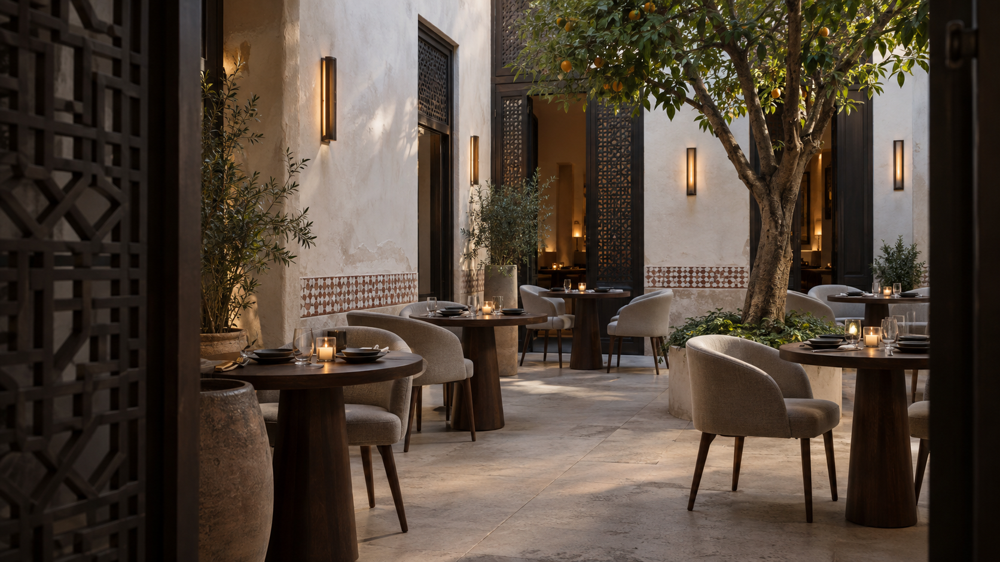

Authenticity
We serve what we remember, not what we imagine Morocco to be. Every dish is drawn from primary sources — family recipes, regional elders, and the market stalls of the Medina. Nothing is invented here.
Moroccan culinary heritage, expressed through a contemporary dining experience
The Beginning
Dar Zafran was founded on the belief that Moroccan cuisine carries the same depth and precision as any great culinary tradition. The medina provides the setting. The market provides the ingredients. The kitchen does the rest.
Located in a restored riad in the heart of Marrakech's Medina, Dar Zafran brings together the architectural character of the building and the living tradition of Moroccan hospitality.
Explore the MenuThe Kitchen
Our kitchen approaches Moroccan cuisine with respect for its foundations and a contemporary sense of restraint. Familiar flavours, careful technique and seasonal ingredients shape a dining experience rooted in hospitality.
Each dish is drawn from the Moroccan culinary canon — tested, refined, and served with the intention it was born with. Nothing is invented here. Everything is remembered.
Our Philosophy
We serve what we remember, not what we imagine Morocco to be. Every dish is drawn from primary sources — family recipes, regional elders, and the market stalls of the Medina. Nothing is invented here.
Every recipe is tested, documented, and refined before it reaches the menu. Improvisation is a luxury reserved for mastery — and even then, it earns no place on the guest's plate.
In Morocco, the table is a sacred act. A guest is not a customer — they are a responsibility. We approach every service with that weight, and that honour.

The Space
The house was a private riad before Dar Zafran. We restored the original zellige tilework, the carved plaster mashrabiya screens, and the central courtyard fountain. Nothing was reconstructed. Everything was repaired.
The building breathes with age. The space asks you to slow down — a quality we believe transfers to the table.
Join Us
We open Tuesday through Sunday for lunch and dinner. Every table is a new chapter.